In this project we have a physcially based rendering pipeline with pathtracing, while also introducing a number of optimization techniques including bounding volume hierarchy and monte carlo sampling. As a result we are able to render scenes with millions of triangle in a reasonable timeframe and with realistic results.
The most basic piepeline for rendering an image looking into a scene requires two components: the random generation of rays for sampling the rgb value of each pixel, and determining whether not a ray intersects with a primitive (triangle or sphere) in a scene. We begin by exploring our implementation of the former:


A limitation of native ray sampling is that testing for intersection with every primitive in a scene can be incredibly expensive, especially for more detailed models. This problem can be mitigated with bounding volume hierarchies, or bvh. The motivation behind bvh is to divide the primitives in a scene into "bounding boxes" which themselves are made of smaller bounding boxes. We can then iterate through the levels of the bounding box in a traversal manner similar to binary search.
The first step into constucting our bvh tree is to decide on our splitting point heuristic. We chose to divide bounding boxes along the hierarchy with the greatest range, and pick the median of the range as the splitting point.
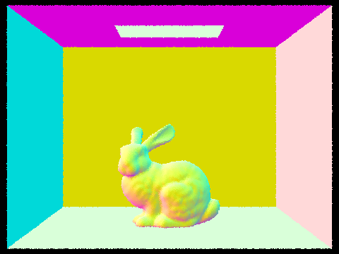 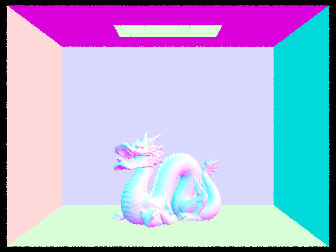We attempted rendering the above images using both our complete bvh implementation, and the default naive implementation in which all primitives belong to the root node. Consistently, we observed that the naive approach took upwards of 50 seconds to render the images, while the properly divided bvh tree allowed to render images in under a second. This is consistent with our expectations of having a bvh structure, as rather than exploring the entire scene each ray can be narrowed down to a small subset of primitives to test again in logarithmic time.
We now move on to implementing a rendering system that can properly render actual materials. It achieves this goal by "backtracking" from the camera, tracing sample rays back to the sources of each ray. For calculating the light reflected from a point, we have two methods to choose from, random sampling in a hemisphere and sampling each light in a scene.
estimate_direct_lighting_hemisphere, in short, randomly generates rays shooting out from an intersection in a hemisphere matching the intersection's normal. If any of these rays hit an emmision object, that emmision is added to the result. In this way, the method aims to approximate the amount of light that is being reflected.
On the other hand, estimate_direct_lighting_importance works by directly polling the light sources in a scene. This approach can help eliminate random samples that do not provide meaningful information.
| 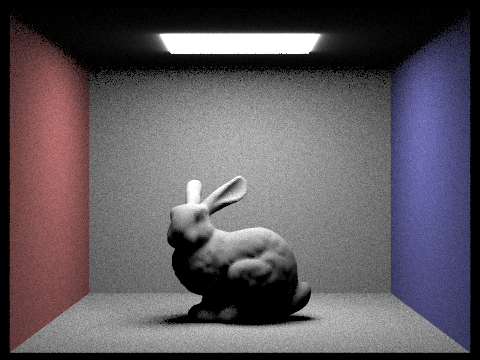 | 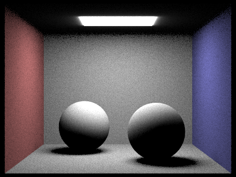 |
| 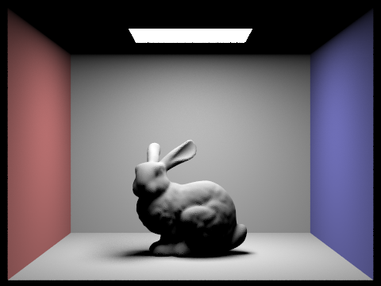 | 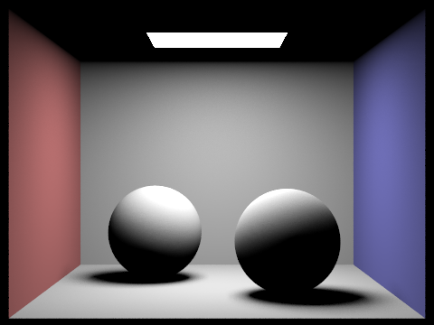 |
The same scenes rendered with hemisphere sampling and direct lighting. We observe that the latter method produces less noise in our renders. We can attribute this to the nature of hemisphere sampling: given that the scene has a single light source at the top, sampling in a uniform manner is likely to miss it. Often, we will cast rays in places that do not have an emission, and given the random nature of our algorithm we are more likely to observe higher radiance between points. This leads to the noise observed in that method.
| 1 sample per pixel | 4 samples per pixel |
|---|---|
| 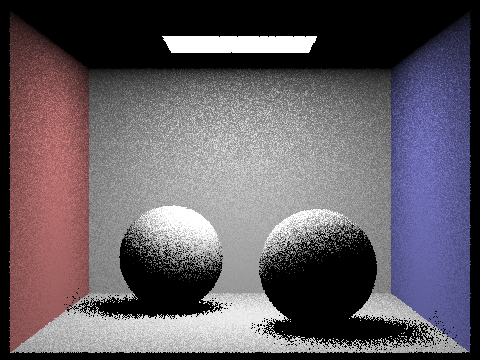 | 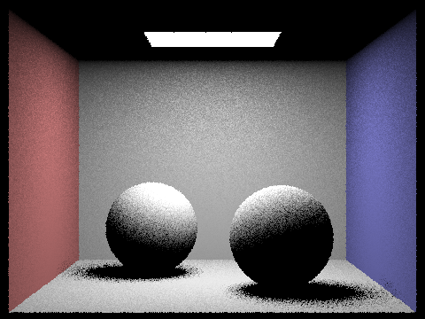 |
| 16 samples per pixel | 64 samples per pixel |
| 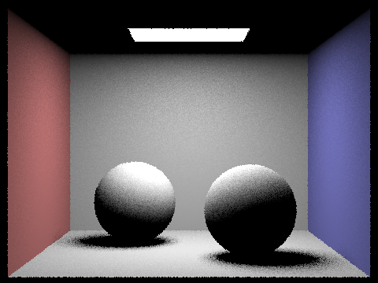 |
The same scenes sampled at different sampling rates. We observe in particular that shadows appear much softer as sampling rate goes up, in that they are more continuous and better reflect the geometry of the object that cast it.
In nature, light bounces more than once, and each object reflects light coming from both direct and indirect sources. So far, we render scenes as if objects only reflect light directly from light sources. After implementing indirect illumination, we will be able to render even more realistic images of environments.
Our implementation of indirect lighting, which is done in the method at_least_one_bounce_radiance, performs calls to the direct lighting method from Part 3, and recursively calls itself to generate the additional bounces of light.
A scene rendered with only direct lighting, and only indirect lighting.
| m=0 | m=1 | m=2 |
|---|---|---|
| 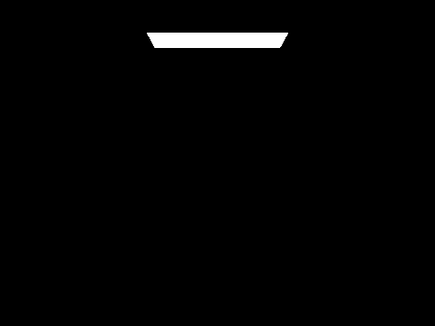 | 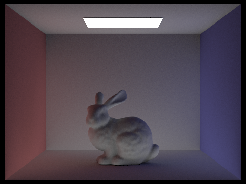 | |
| m=3 | m=4 | m=5 |
| 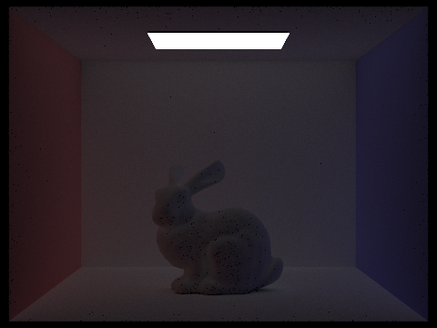 | 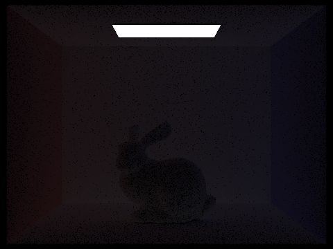 | 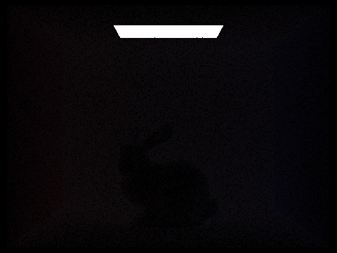 |
The light being reflected from rays sampled at their 0th bounce, up to their fifth bounce. We see that significant amounts of light are being reflected off the walls and the bunny for m=2 and m=3, showcasing the power of global illumination for capturing the light that bounces between indirect sources.
| m=0 | m=1 | m=2 |
|---|---|---|
|
||
| m=3 | m=4 | m=5 |
The images generated from accumulating light from bounces up to m. Using a high sampling rate (1024), we can render impressive looking images. We also can see how accounting for additional light bounces can produce more realistic renders.
| m=0 | m=1 | m=2 |
|---|---|---|
| 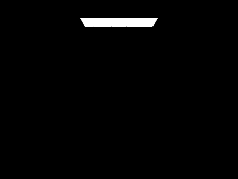 | 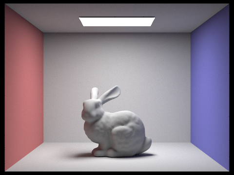 | |
| m=3 | m=4 | m=100 |
The images generated with round robin enabled. Even when expanding up to 100 bounces, we still observe that after about three bounces, the scene seems to converge on a final result.
| 1 sample/pixel | 2 samples/pixel | 4 samples/pixel | |
|---|---|---|---|
| 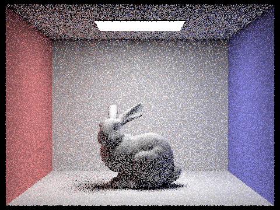 | |||
| 8 samples/pixel | 16 samples/pixel | 64 samples/pixel | 1024 samples/pixel |
| 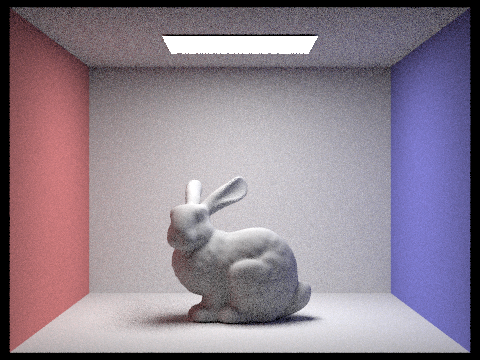 |
Images generated at various sample per pixel rates. As we increase the number of samples, the noisiness of the image decreases. At 1024 samples per pixel we observe miniscule noise in the image.
Intuitively, we can reason out that parts of the image have less things going on, and therefore may not need as many samples in order to obtain the "correct" result. Thus we introduce adaptive sampling, another time optimization that allows us to algorithmically determine if a specific pixel has already converged on its actual color, at which we prematurely terminate the sampling process. We return to the ray sampling pipeline we implemented in part 1, and make the following adjustments.
| 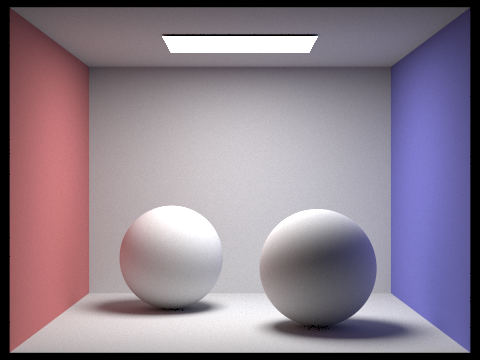 | |
| 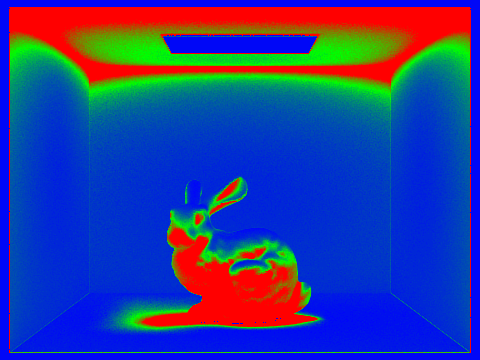 | 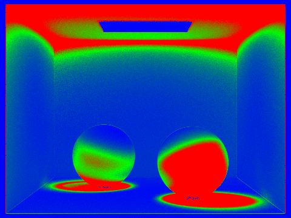 |
Two renders using a very high sampling rate (2048). Thanks to adaptive sampling, we can save time on expensive renders by avoiding oversampling in areas that converge quickly (marked in blue).